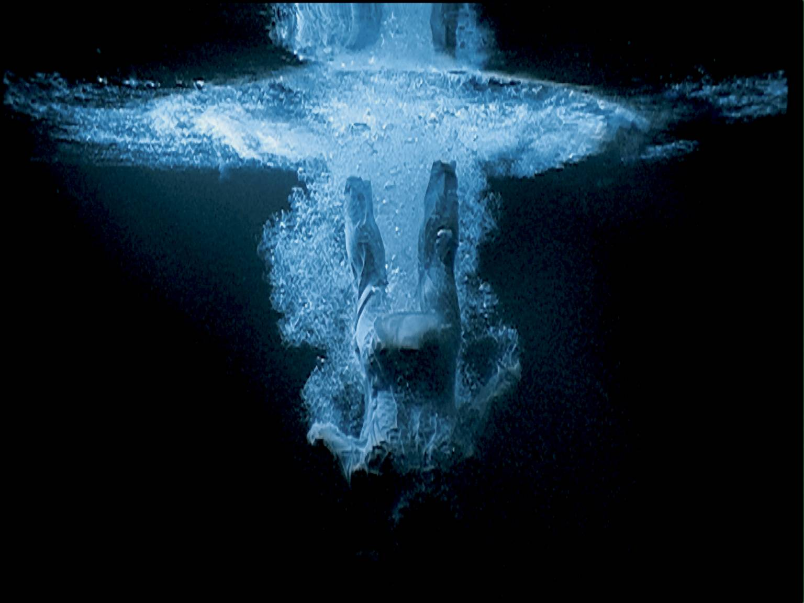
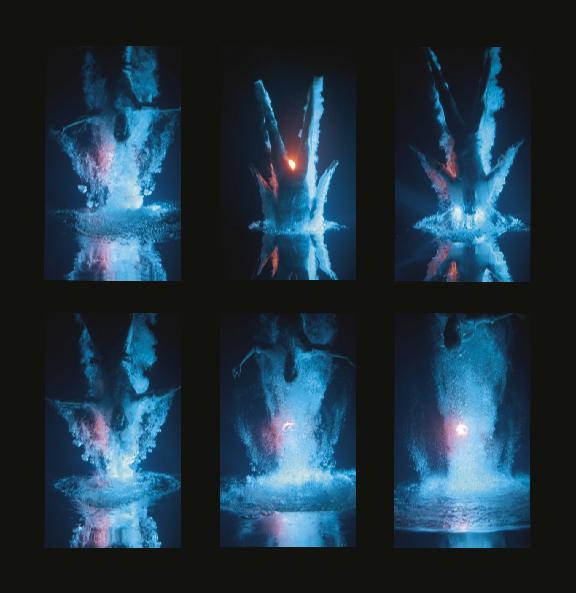
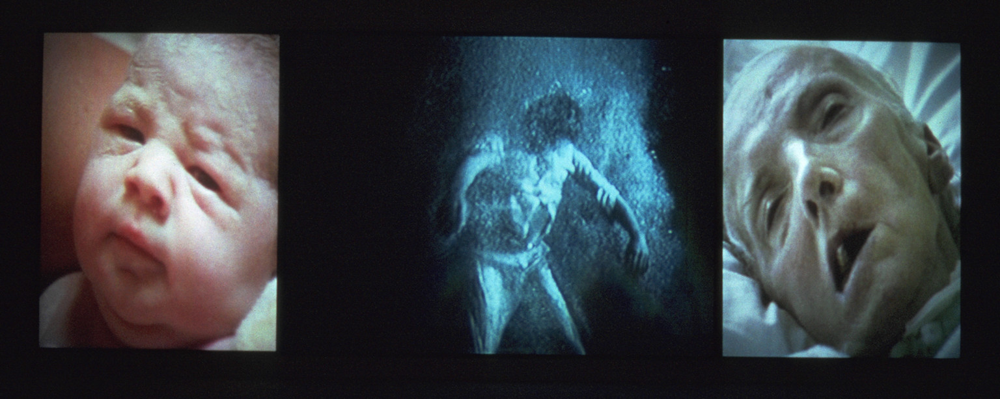

Rina Arya
Bill Viola
Video art
Transcendent
Natural
Non-representational
Terrifying
To summarise the contemporary position, as a category of aesthetic experience, the sublime gives artists the opportunity to define their relationship to a host of different subjects including nature, religion, sexuality and identity.
(…) Viola’s Five Angels are life-size but their scattered placements, as well as the sensory effects that accompany the movement of the figures, make the overall image formless: the viewer simply cannot take it all in and is completely overwhelmed. The work evokes the duality of the sublime. It plays on our primal fear of drowning while also introducing passages of wonder, namely when the figure emerges from the surface of the water and hovers in mid-air, which defies all expectations.
  